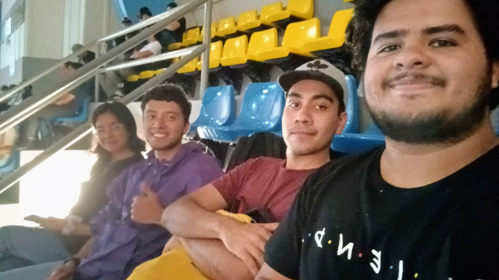
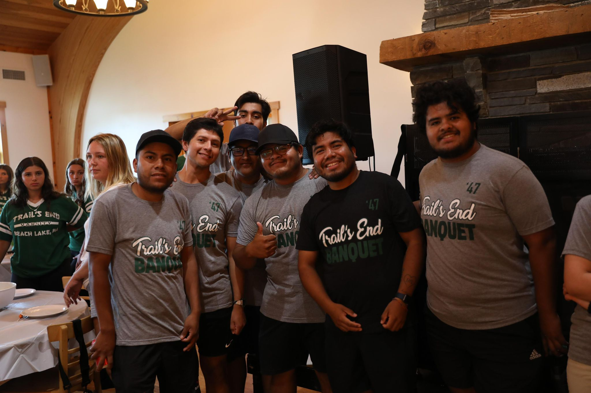
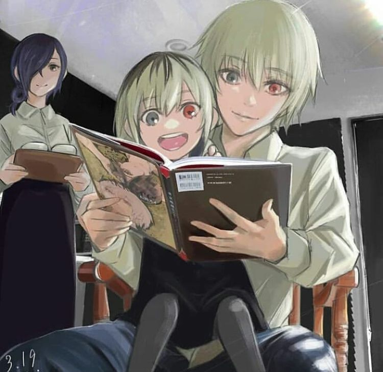
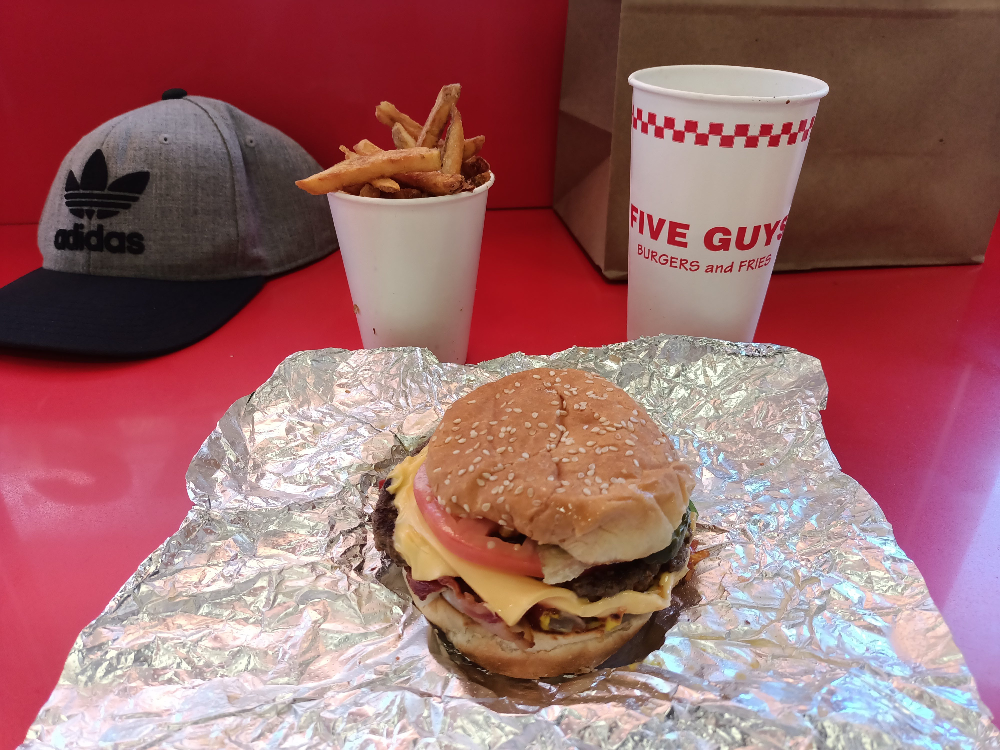

Sobre Mí

Christopher Rojas Castillo
"Lo que ves es lo que hay, hasta podría ser menos"
Christopher Rojas Castillo
"Lo que ves es lo que hay, hasta podría ser menos"
Mi familia esta conformada por papá (Israel Rojas), mamá (Ursula Castillo), 2 hermanas menores (Paola Rojas y Regina Rojas)
"Los Mameitors" se formo como grupo en 2020 gracias a la pandemia y es mi grupo de amigos de diferentes epocas a lo largo de mi vida (Primaria,Secundaria,Preparatoria)
Koala nace como grupo en tercer semestre, es el grupo de amigos con el que mas convivo actualmente y hacen mas divertida y amena mi estancia en el Tec
Grupo de personas que conoci en el verano del 2024 (al menos a la mitad) con los que trabaje y vivi por 3 meses grandes personas con las que vivi grandes momentos
Cantante favorito
"Acércate, cuéntamelo, qué vil y sinvergüenza soy, tienen razón, no es solo un rumor Tendremos la conversación de lo cuánto despreciable soy, tienen razón quizá un poco peor
Anime y Manga favorito
"Este mundo no esta mal, simplemente asi es" Comida favorita